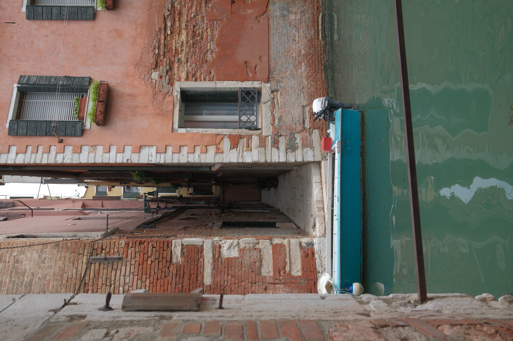
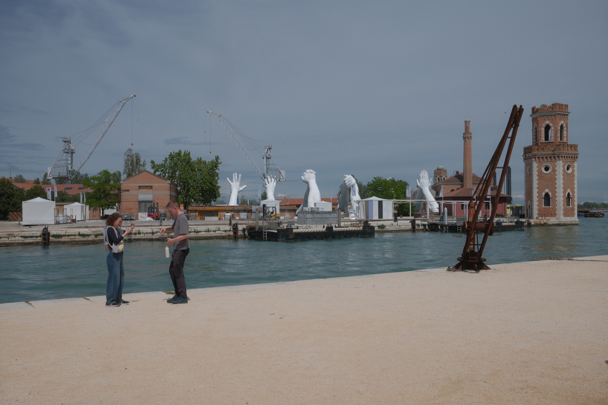
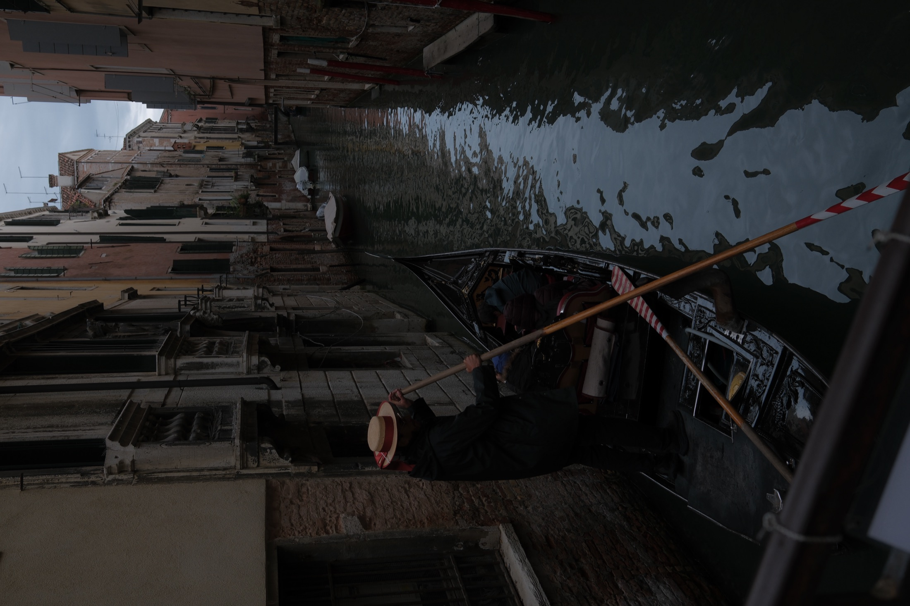
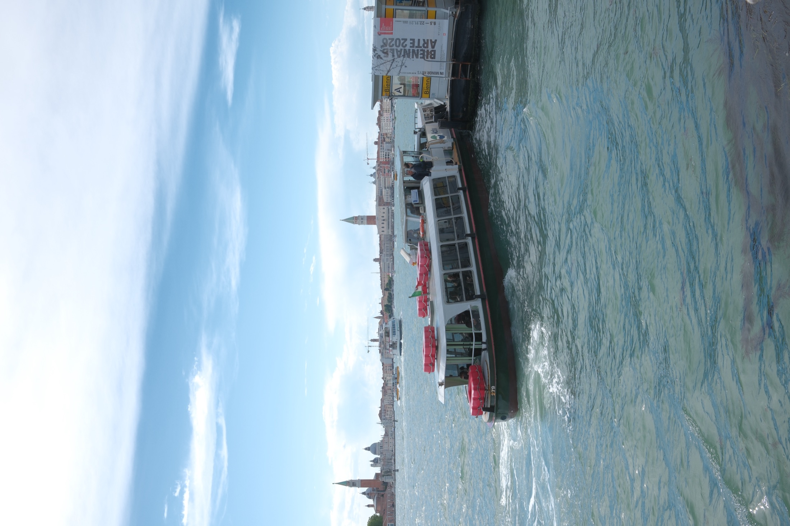
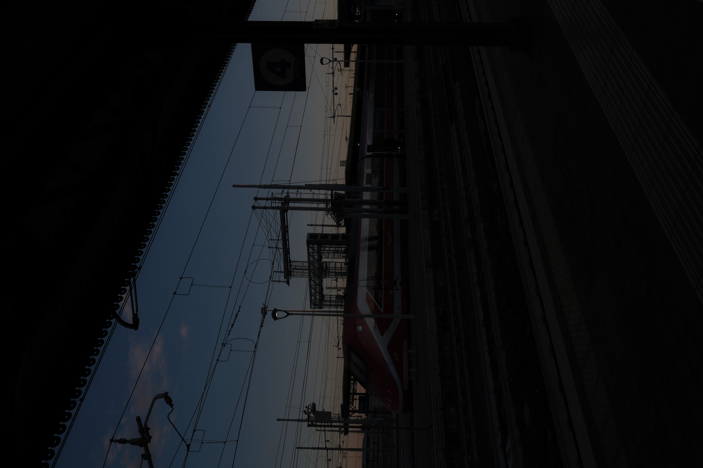
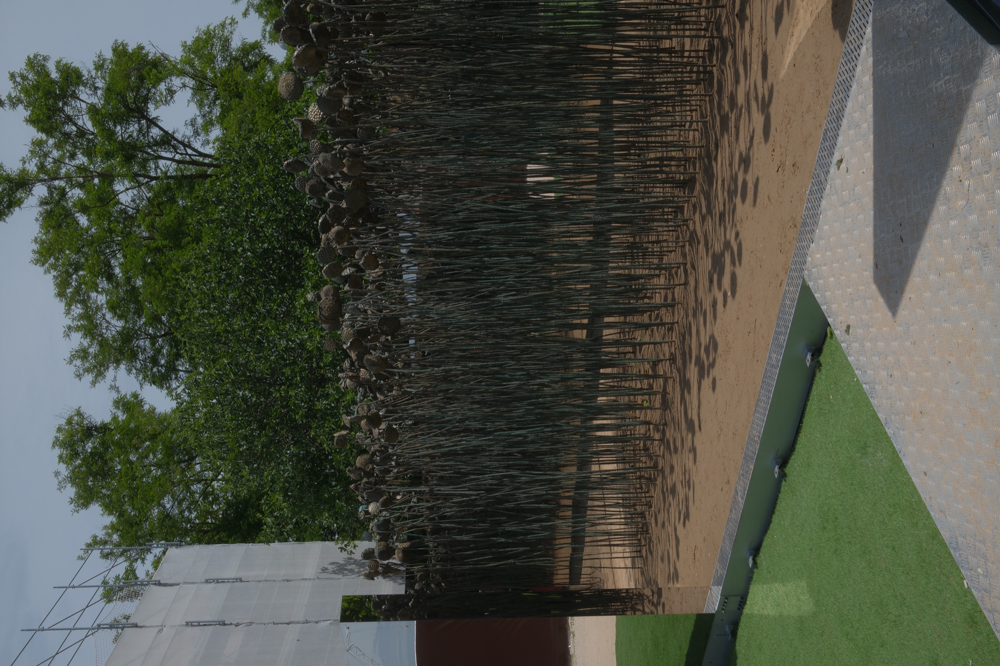

Reading
The photographs move between canals, interiors, and exhibition light. The old city is not treated as a monument, but as a surface where images continue to accumulate.
03 / Water memory
Venice holds memory through walls, water, and images. The city appears both ancient and staged, a place where history is lived, watched, and repeatedly turned into a frame.

The photographs move between canals, interiors, and exhibition light. The old city is not treated as a monument, but as a surface where images continue to accumulate.
A city that remembers through reflection. Water softens the edges, but it also makes the place unstable.





